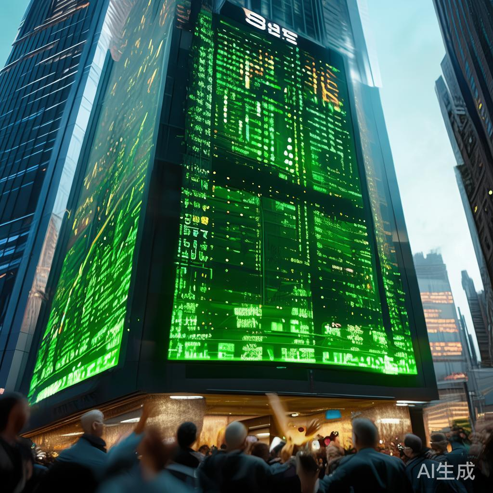
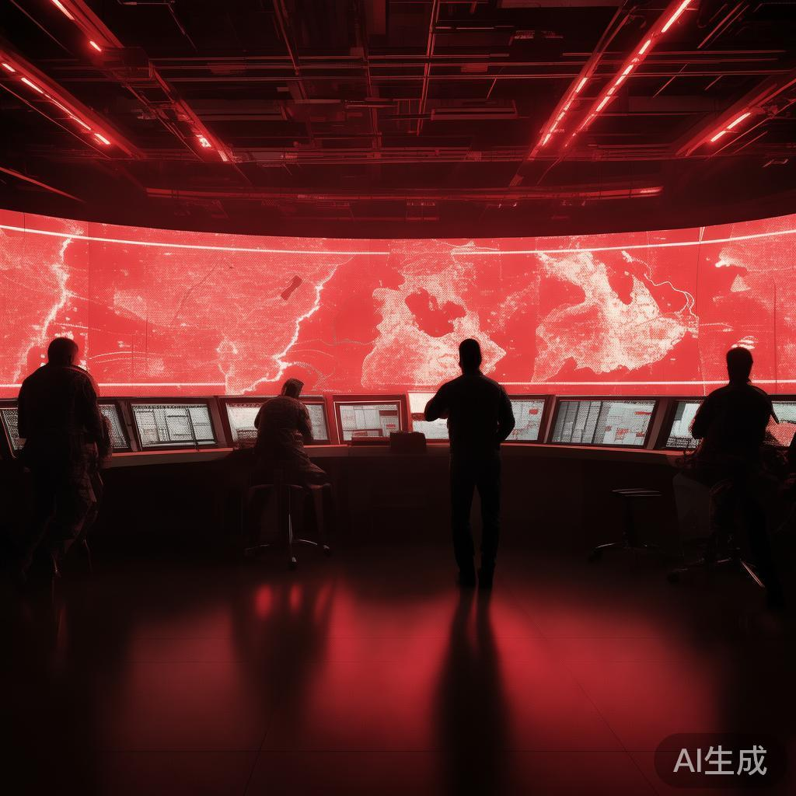
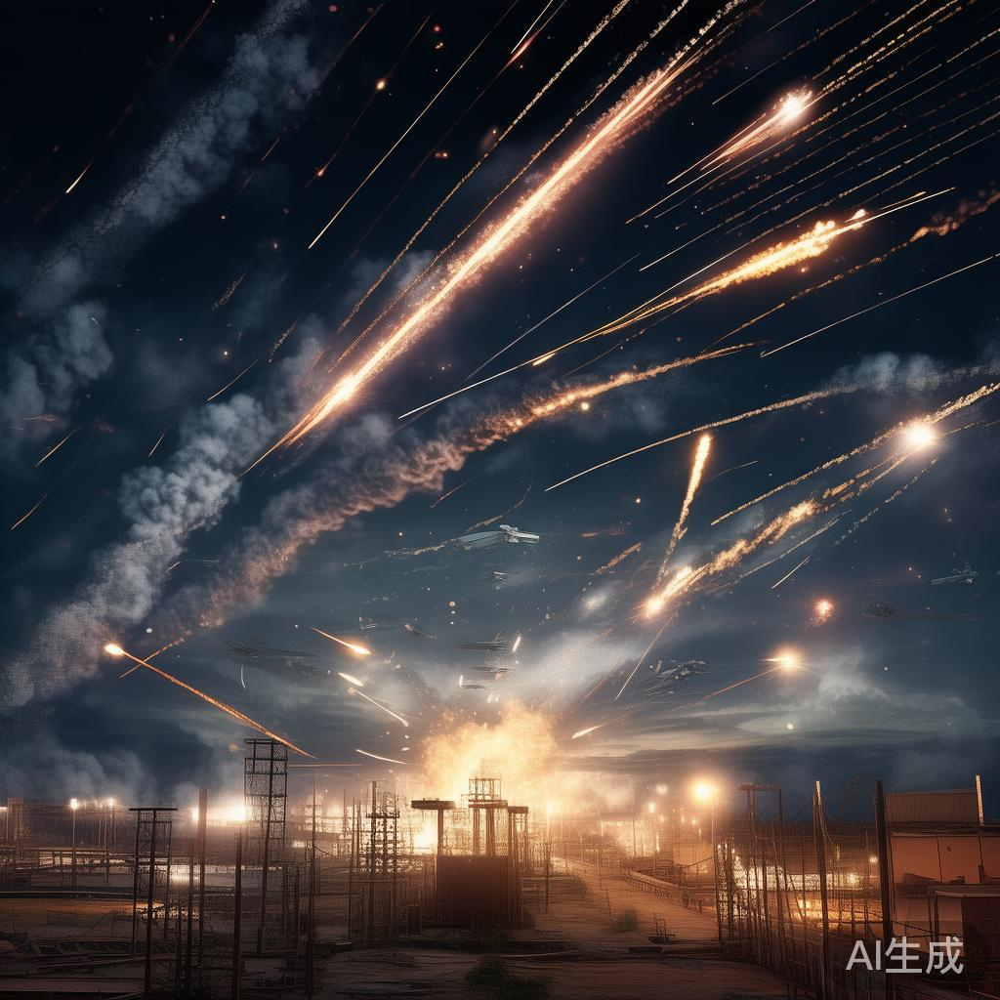
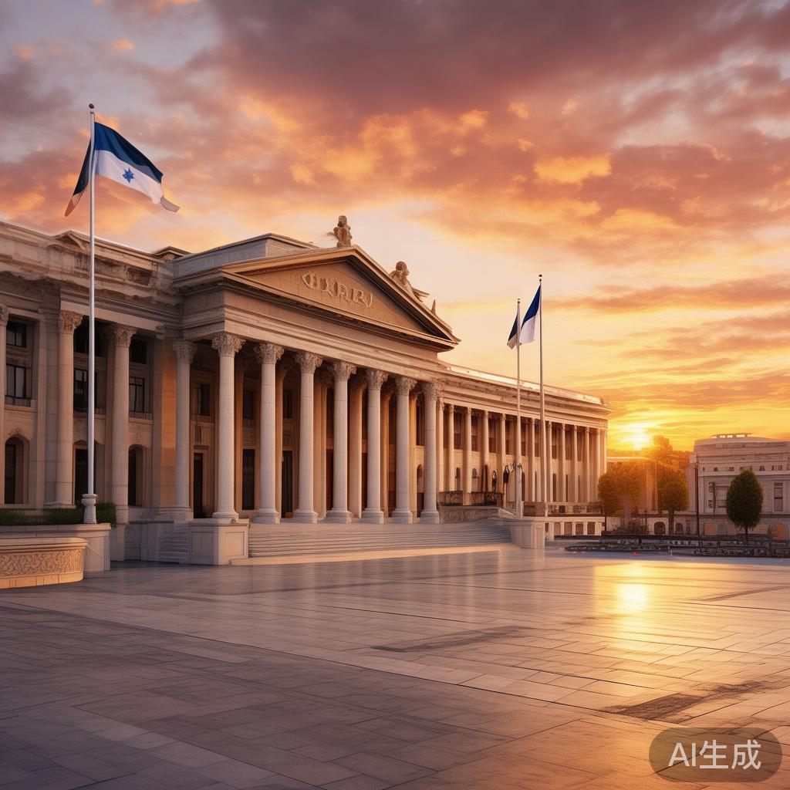
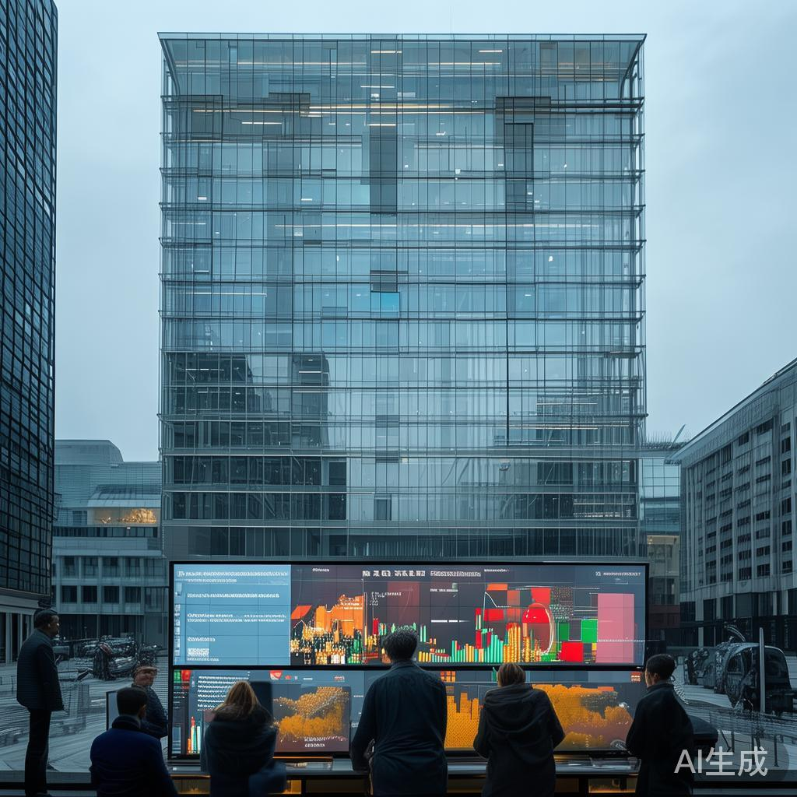
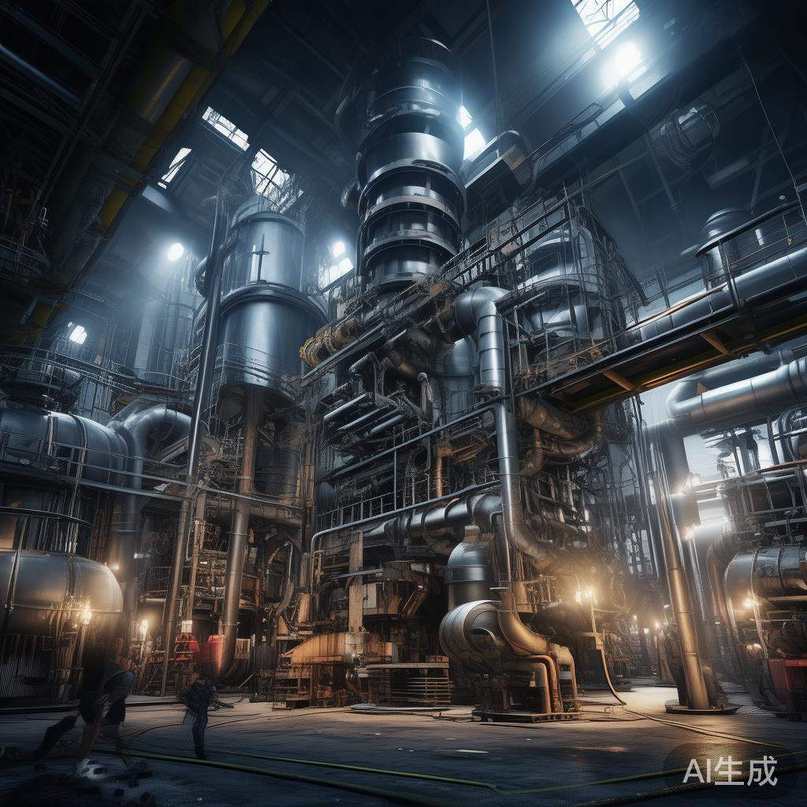
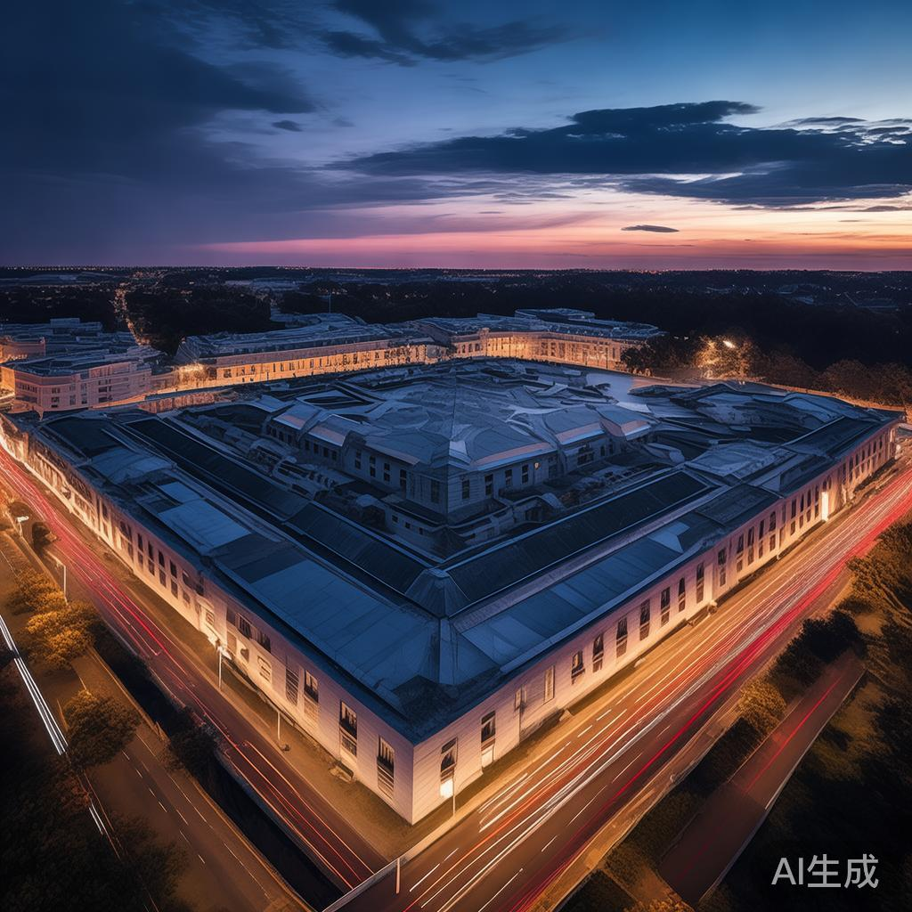
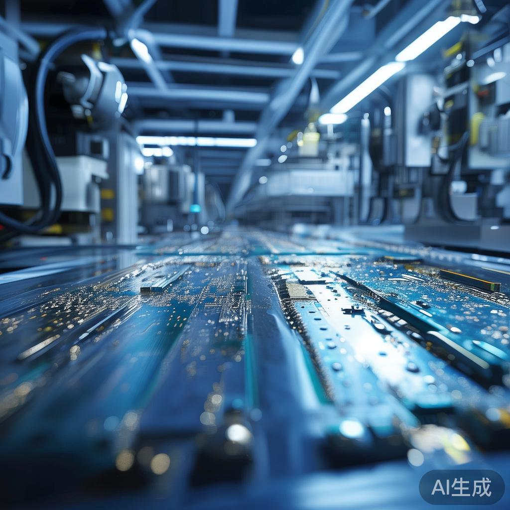
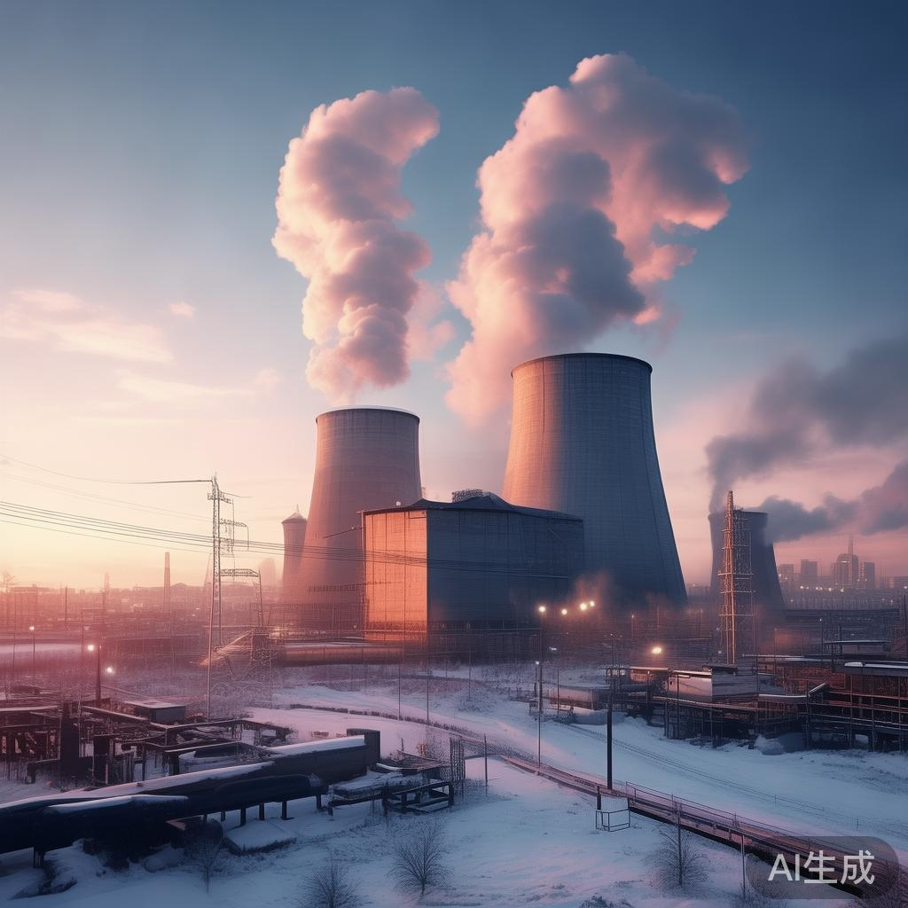

01
纳指100尾盘反弹暂避熊市 亚太股市周四开盘走高
华尔街尾盘反弹令纳斯达克100指数暂时避免跌入熊市，但市场对AI投资热潮可持续性的担忧仍未消散，美债收益率走低。受提振，周四日经225指数开盘涨0.73%报57429点，韩国综指开盘涨1%报4745点。美股周四因感恩节休市一日。
国际

华尔街尾盘反弹令纳斯达克100指数暂时避免跌入熊市，但市场对AI投资热潮可持续性的担忧仍未消散，美债收益率走低。受提振，周四日经225指数开盘涨0.73%报57429点，韩国综指开盘涨1%报4745点。美股周四因感恩节休市一日。

据美国媒体24日报道，消息人士称美国政府内部正就可能在未来对伊朗打击行动中将伊朗高层领导人列为目标重新展开讨论，相关动向令本已紧张的中东局势再添不确定性。

斯塔夫罗波尔边疆区州长通报，俄方击退了针对涅温诺梅斯克工业区的无人机袭击。涅温诺梅斯克为俄南部重要工业城市，近期俄乌双方针对对方纵深工业与能源设施的无人机袭击持续高发。

以色列议会25日初步通过一项法案，旨在限制总理任期、禁止受特定刑事指控的议员组建政府，并建立在任总理面临相关刑事指控时的解职机制。外界普遍认为法案将影响现任总理内塔尼亚胡的政治前途，后续仍需多轮表决。
在全球市场经历新一轮AI交易抛压之际，印度股市逆势走强：BSE Sensex指数周三大涨约1.8%收于83938点，创今年2月以来新高，11月累计上涨超14%。油价下跌与海外资金持续流入，令印度成为资金避风港。

德国联邦统计局25日公布数据，今年第三季度德国GDP环比增长0.1%，较初值下调0.1个百分点；第一、二季度环比增速分别为0.4%和0.3%。欧洲最大经济体增长动能疲弱，复苏之路依然曲折。
高盛发布2027年中国经济及股票市场展望，预计中国经济将保持稳健增长，出口韧性有望延续；资本市场方面，高盛将港股在亚太市场配置中的评级由中性上调至超配。
华泰证券研报称，AI资产或迎超跌反弹，但产业内部更重交付与回报质量；短期或进入超卖区间，A股仍需关注筹码压力。若反弹兑现，出口约束与海外硬件订单的不确定性仍是关键变量。
11月25日A股三大股指集体调整，上证综指跌2.03%报3476.47点，深证成指跌3.24%，宽基ETF尾盘再现放量。同花顺iFinD数据显示，昨日ETF资金整体净流入371.07亿元，其中股票型净流入437.66亿元，资金逢低布局意愿明显。
11月26日、27日，广州期货交易所氢氧化锂期货和期权将相继挂牌上市，氢氧化锂期货成为广期所挂牌交易的第六个品种。锂产业链再添价格发现与风险管理工具，产业企业套保渠道进一步丰富。
Wind数据显示，以发行起始日统计，截至11月25日，科创债年内发行规模达1.7万亿元。作为债券市场服务科技创新的重要载体，科创债发行规模持续保持高位，为科技企业拓宽中长期融资渠道。
上市公司近期公告显示，社保基金在震荡调整行情中频频出手，不仅加仓多家有色金属龙头公司，还买入多家科技公司股票。在部分业内人士看来，社保基金逆势布局具有重要的风向标意义。
金融机构近期明显加大对上市公司股票回购增持的支持力度，震裕科技、瑞丰新材、赣锋锂业、复星医药等公司公告称已取得金融机构股票回购增持专项贷款支持，回购增持工具使用进入放量阶段。
继AI辅助证明黎曼猜想引发关注后，AI数学研究再获新进展：北京时间24日，美国AI公司Anthropic与OpenAI先后在各自官方GitHub仓库发布"VP≠VNP"问题证明，两大AI公司同日向同一计算复杂性难题发起冲击。

据科技日报，由中科院工程热物理研究所与中储国能联合研制的全球首套600兆瓦级压缩空气储能系统膨胀机，完成集成测试并顺利下线，标志着我国在超大功率压缩空气储能核心装备研制领域跻身国际先进行列。

据《华盛顿邮报》报道，在近期针对英伟达的讨论中，国防部长赫格塞斯及五角大楼官员曾探讨援引《国防生产法》重新任命英伟达首席执行官的方案，围绕这家AI芯片巨头的博弈持续升级。

全球电子协会发布面向全行业的供应链警报：PCB缺货正从局部环节蔓延至成品板交付，汽车、工业、医疗、通信等领域客户交付周期普遍拉长，高端PCB订单已排至2028年，算力需求带动产业链加速扩产。
据央视报道，冰雪消费热度走高，产业供给同步提速。张家口宣化产业园内，全自动造雪机、国产化索道订单爆满，新款造雪机可自动监测温湿度、捕捉雪质数据，国产冰雪装备加速突围。
据《纽约时报》22日报道，58岁美国居民莫莉·法尔科迎来接受基因编辑猪肾移植一周年，该猪肾已在人体内持续工作整整一年。异种器官移植迈过新关口，为缓解全球器官短缺问题提供新路径。

据经济参考报，入冬以来多股冷空气影响我国，北方地区供暖全面展开，能源保供进入迎峰度冬关键阶段。今年能源保供"工具箱"升级，煤炭油气加力增产，新能源注入绿色动力，跨省跨区协同保供持续加码。
💬 评论区